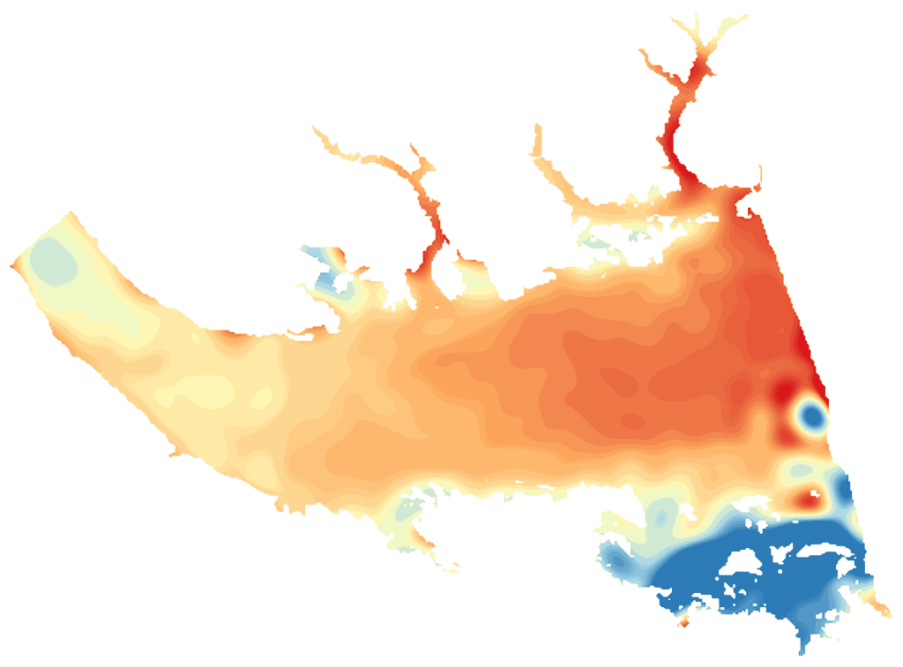

LakeScope › SC
Lake Marion today
Updated 2026-11-21 - Atlas Labs
Clear water, 59°F water, level steady, near normal, windy Saturday (17 mph NE).
Water level
74.16 ft
USGS gauge 02169921 - 2026-11-21
7-day trend: steady (-0.06 ft). Compared with normal for this date: -0.4 ft (same weeks, 2016-2025).
Water clarity and algae
Clear water Last clear view: about a week ago.
Surface temperature
59°F
seen from space on 2026-11-19

Weather, next 3 days
| Day | Sky | High / low | Wind | Rain |
|---|---|---|---|---|
| Saturday | Light Rain | 65 / 61°F | 17 mph NE | 93% |
| Sunday | Chance Light Rain | 70 / 58°F | 8 mph NW | 36% |
| Monday | Mostly Sunny | 73 / 57°F | 2 mph NW | 1% |
Sunrise 06:59 - sunset 17:15 - Waxing gibbous. National Weather Service.
Get the LakeScope app: alerts and the 3-D view of Lake Marion